Case Studies
A few stories from across my career—building Cove, Uber Eats, and Google Street View. These are meant to give a feel for how I think and work, not to be an exhaustive portfolio or to get into the weeds of every UX and visual-design decision.
Cove 2023–2025 · co-founder, sole designer & full-stack engineer
After Uber I spent a couple of years investing and advising, and the whole time I was quietly poking at large language models. When GPT-3 landed it felt like an alien technology—we were all prodding it with sticks, trying to figure out what it could actually do. That question wouldn’t leave me alone, so in 2023 I started Cove and built the first version from the first commit: I was the sole designer and, most days, the full-stack engineer too.
My thesis was that an LLM is a genuinely new material, and we were building the wrong things with it. Chatting with an AI in natural language is wildly powerful, but a single-threaded chat is a strange place to do real thinking. When people work on anything complex, their process has a shape: explore widely, collect a pile of ideas, then prune. We diverge, then converge. A lone scrolling transcript fights that at every step—imagine trying to run an entire project, or a whole company, through one Slack thread.
Cove Canvas: giving AI a place to think with you
The first version of Cove was a spatial canvas. Instead of a transcript, you and the AI co-created persistent “cards”—documents, tables, little apps—that you could arrange, revisit, and build on over days. I got to design and build the whole thing end to end: a React web app plus an Electron desktop app and a Chrome extension on the front end, Node and Python services behind them, a real-time multiplayer store, and a vector database for retrieval. I care a lot about build quality, so I sweated the details—optimistic updates, low latency, and satisfying micro-interactions like collision detection and a bird’s-eye view that reinforced how the canvas worked.
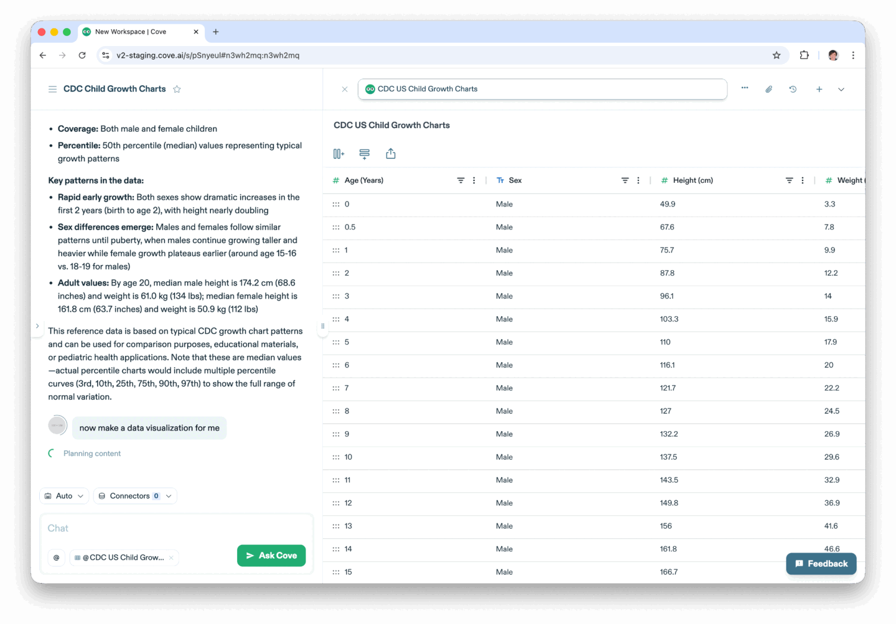
We had devoted users who’d spend 30+ minutes a session wrestling with genuinely hard projects, and the problems we were solving clearly resonated. But growth plateaued, and models kept getting better underneath us. We’d gotten some big things right—persistent artifacts and support for nonlinear exploration—and some things wrong. There was too much housekeeping, our generative UI was trapped inside cards, and honestly there was just too much newness to absorb at once. The biggest lesson: the human–AI partnership isn’t 50/50, and for most tasks natural language beats direct manipulation.
Links & Tabs: a very old paradigm for nonlinear thinking
That thinking led somewhere unexpected. One afternoon of vibe-coding a prototype, the obvious insight hit: wait, it’s all just links. The web already gave us a beautifully familiar paradigm for nonlinear thinking—pages, hyperlinks, and tabs—and nobody had to learn it. So Cove v2 became a generative workspace built around pages. You ask a question, Cove writes a page, and every meaningful noun on that page is a link. Some links point to real URLs; others are prompts that generate the next page when you click them. Pages open in tabs, the whole workspace is shareable and multiplayer, and changing the underlying data ripples downstream into things like maps and charts.
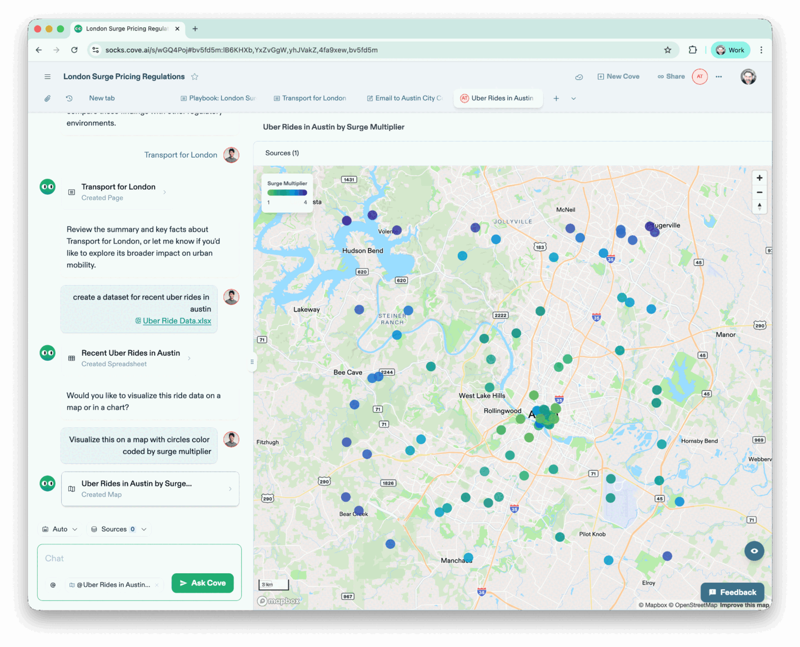
A lot of the craft happened at the seam between design and prompt. One recurring question was how much visual judgment to leave to the model versus prescribe up front. To make a tool like Mapbox reliable in the hands of an LLM, for example, I wrapped its sprawling SDK in a much simpler component with a handful of opinionated options—so the model could produce a great map from a short, legible instruction. I spend nearly as much time shaping prompts as I do the pixels; that’s where you find the grain of the material, the intersection of what’s genuinely useful and what the model can actually do.
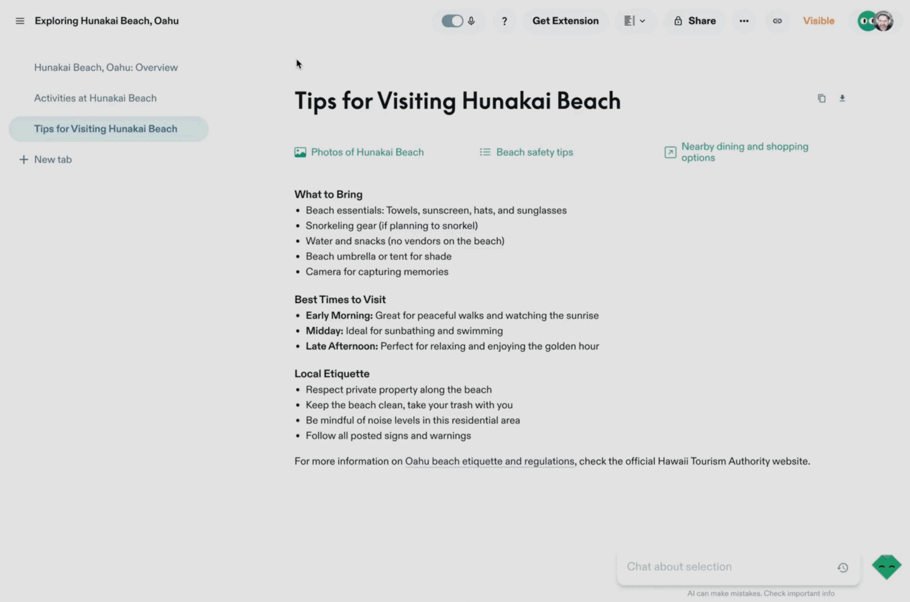
From there we started indexing and querying connected sources like Shopify and Klaviyo, working with design partners to find product-market fit, and leaning into an “AI consultant” framing for a slimmed-down version people could grasp immediately. In 2026, Cove joined Microsoft AI, where I’m now a Partner Product Design Director continuing to chase these ideas.
Uber Eats 2014–2020 · founding team, head of design
Laying the groundwork for Uber’s new businesses
I joined Uber as a founding member of the Uber Everything team, with the charter to start offering new services beyond rides and find Uber’s next billion-dollar business.
I quickly recognized it would be difficult to experiment within the paradigm of the Driver app at the time: it assumed all “jobs” were human riders, and only one job could be happening at a time (aside from some hacks to accommodate Uber Pool, which had just launched). To accelerate our progress, I took over management of Uber’s Driver Experience alongside my Uber Everything responsibilities, and rallied the team to transform the Driver app into a platform for multiple types of work—an app through which Uber could dispatch any series of “go here” and “do this” tasks. To this end, we introduced two new UX primitives, “go steps” and “do steps”:
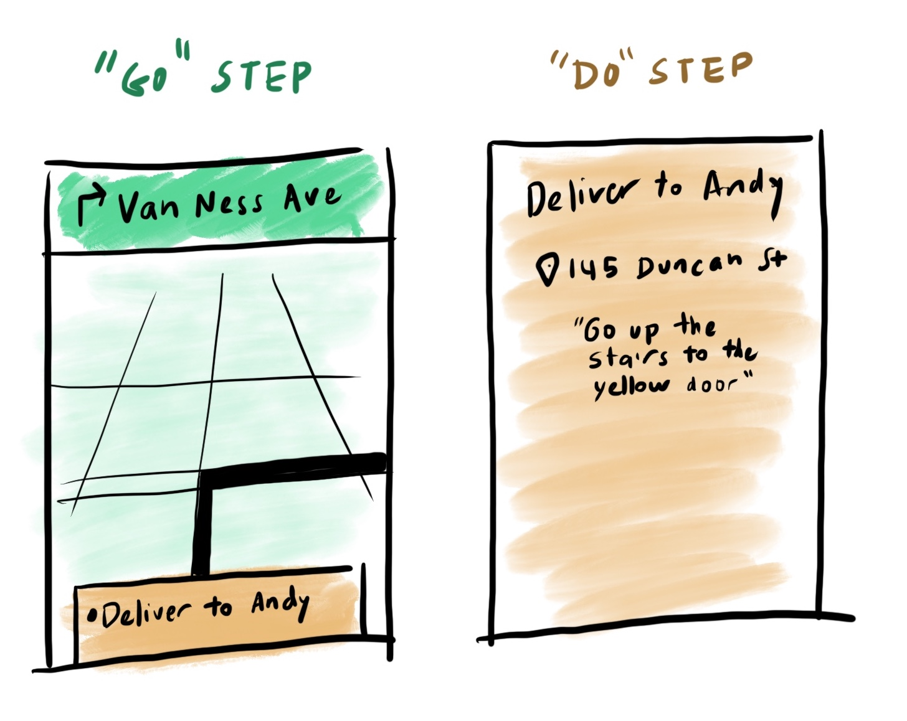
These simple primitives, along with the dispatch architecture to support them, proved remarkably flexible. Assembling a team of just 2–3 designers, I designed MVP versions of both the consumer- and partner-facing products, which let us launch Uber Fresh, Uber Rush, and Uber Corner Store within a few months, gathering signal on product-market fit. The idea took off internally too—before long I was overhearing people I’d never met talking about “go steps” and “do steps” in the hallway. Nearly a decade later, the driver app still runs on that same basic model.
Based on our learnings, we focused our energies on a refinement of Uber Fresh that we called Uber Eats.
Designing a three-sided marketplace
With Uber Eats, we weren’t just building a single product, but a marketplace with distinct products for eaters, couriers, and restaurant employees (both kitchen staff and managers), as well as an array of internal tools for local ops teams to manage network reliability and curate local content.
We couldn’t just design independently for each user type—we also needed to consider the dispatch and ranking algorithms and incentives that governed the performance and interactions between the three sides of our marketplace; for example:
- How might we reward the most-loved restaurants with more prominence in the Eater app, and coach lower-performing restaurants to improve? Should food ratings, speed, and defect rate be rolled into a single quality score, or do they need to be treated as distinct concepts?
- How might we encourage eaters to create orders that are more likely to be “batchable,” to reduce delivery cost? Can we pass along some of the cost savings to the eater?
- How can we get handoffs between restaurants and couriers to happen like clockwork, while minimizing the burden on restaurant staff to tell us exactly when each order is complete?
Although I was quite involved in many of the big UX challenges along the way, I was supported by many very capable ICs, so I won’t focus on individual UX problems here. But the screenshots below should give you a sense of the breadth of our team’s work, and the level of craft in our execution:
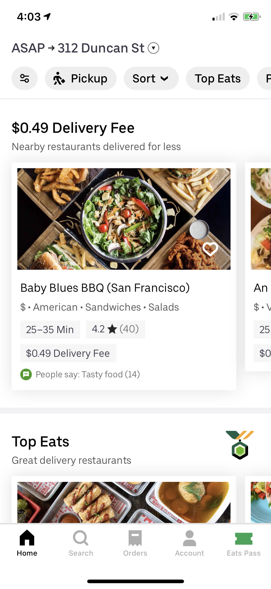
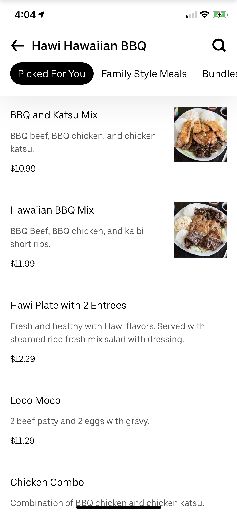
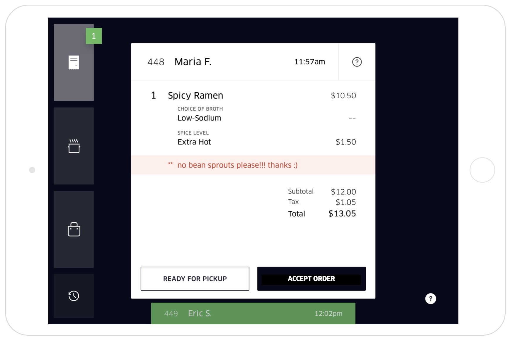
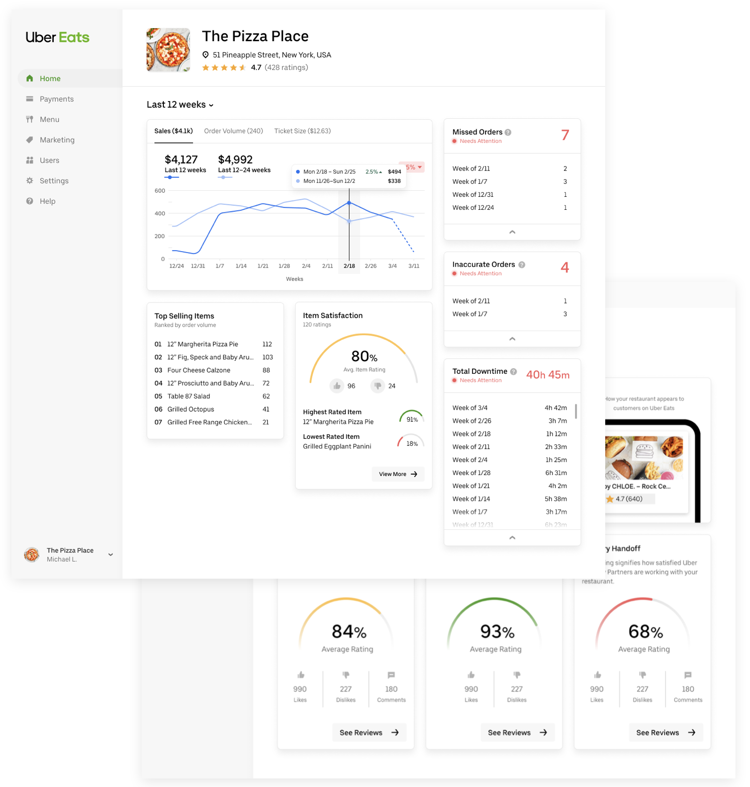
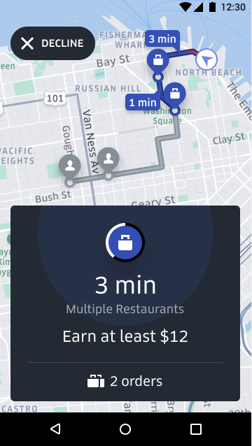
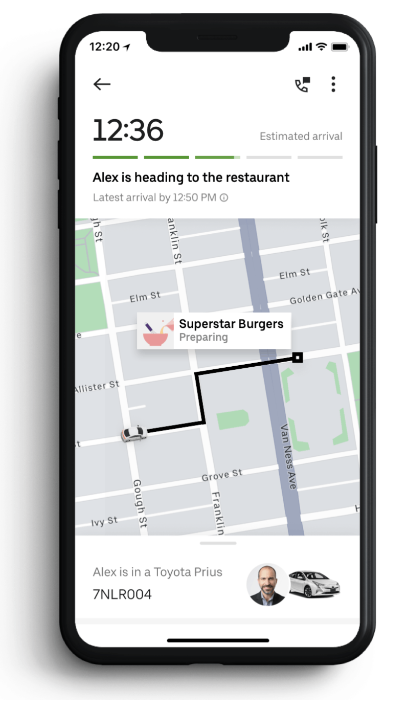
Building a thriving team
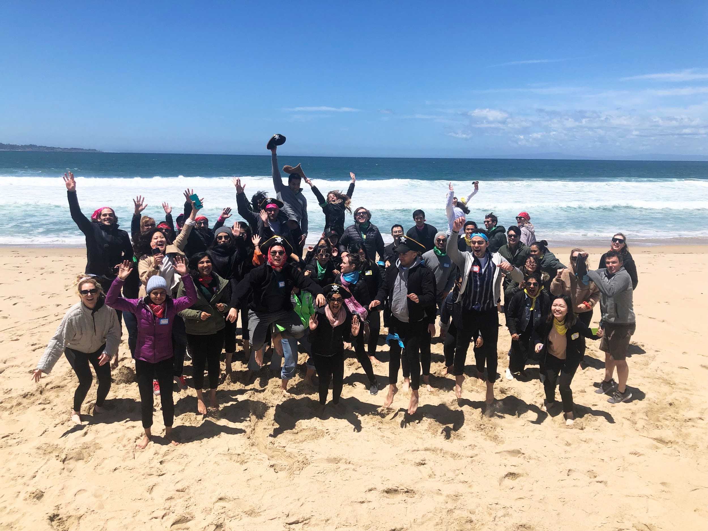
As head of design for Eats, one of my primary “work products” was the team itself. The early Uber Eats design team that I personally assembled consisted of CS grads, art-school graduates, former chefs, financial analysts, and ballet dancers; all of them were high-bit-rate thinkers and white-hot creative problem solvers. This core group was admired internally and externally for its talent and culture, and that positive feedback loop helped me grow the Uber Eats design team from zero to 60 people over five years. My org was also the most gender-diverse design org at Uber: women comprised 54% of my org, including 7 out of 11 managers.
I’m also proud that I built a culture at Eats that embraced the scrappiness and speed of Uber but was also known as an inclusive, supportive place to collaborate and grow as a designer. I think shipping great work depends on hitting the sweet spot between autonomy and collaboration: where each designer is the “head of design” to their cross-functional counterparts, and yet also feels fully part of a design team with a lively crit culture and an approach to problem solving that is holistic rather than siloed.
In 2016, our Eats tech teams were completely US-based, yet we needed to design for Uber Eats users in an increasing number of markets beyond the US (eventually 45 countries). To help us rise to the challenge, I introduced the Walkabout initiative as an ongoing part of our design team’s culture. Over the next four years, we’d send groups of 3–5 team members on dozens of trips to international Eats markets. During these trips, which were distinct from our UX Research field studies, our designers would focus on building relationships with our local teams and customers, understanding the cultural context and urban landscape, and assessing the quality of our baseline customer experience.
Sending every designer on an annual Walkabout helped our team, which was almost completely US-based, mitigate our natural biases. It was also a great team-bonding experience and rite of passage for new team members, and an amazing perk for recruiting. All of it added up: Eats grew into a $25B+ business that helped carry Uber through the pandemic.
Google Street View 2006–2010 · founding designer
For good measure, I wanted to include one case study from my IC career, though here I’ll focus more on innovation than on craft.
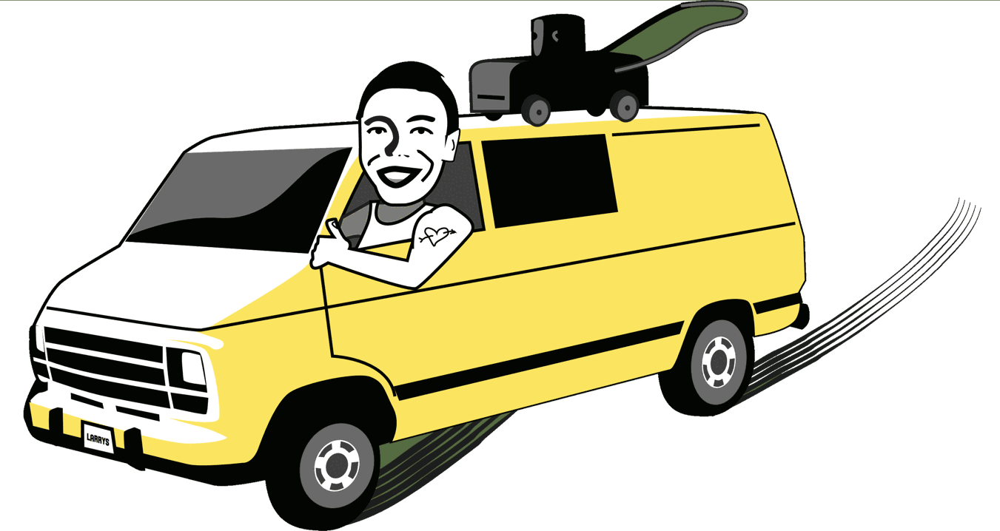
Taking Street View from zero to one
In 2006, I joined a team of engineers called Cityblock that had been collecting and processing imagery from a couple of experimental cars; they weren’t sure what to do with that imagery yet. They had some notions of OCRing the images to improve search, or stitching the imagery into flat “pushbroom” panoramas. As the solo designer on this project I led the design vision and execution from zero through launch, and for a couple of years beyond.
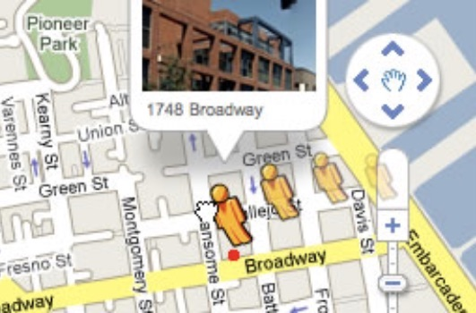
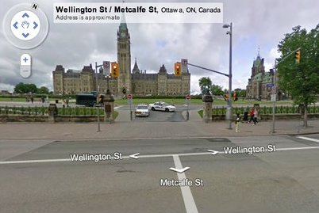
Many of the big design decisions seem obvious in retrospect, but we were charting new territory at the time. A few contributions I’m especially proud of:
- Convinced the team that an immersive 360° experience was essential, and that it should live inside Google Maps. This meant building with Flash (a first for Google) given the limitations of HTML/JS/CSS at the time.
- Designed the draggable Pegman avatar as the link between Street View and Google Maps. Pegman looks different from each angle, giving an extra visual cue for orientation, and his perch at the top of the zoom slider subtly reinforces Street View as the closest zoom level.
- Developed a navigation model with arrows inside the imagery, anchored to “yellow brick roads” for orientation. Rather than being pinned in screen-space or real-space, the navigation affordances slide around intelligently to stay in view as you pan and zoom.
- I also coined the name “Street Views” for the product, which stuck (thankfully minus one character).
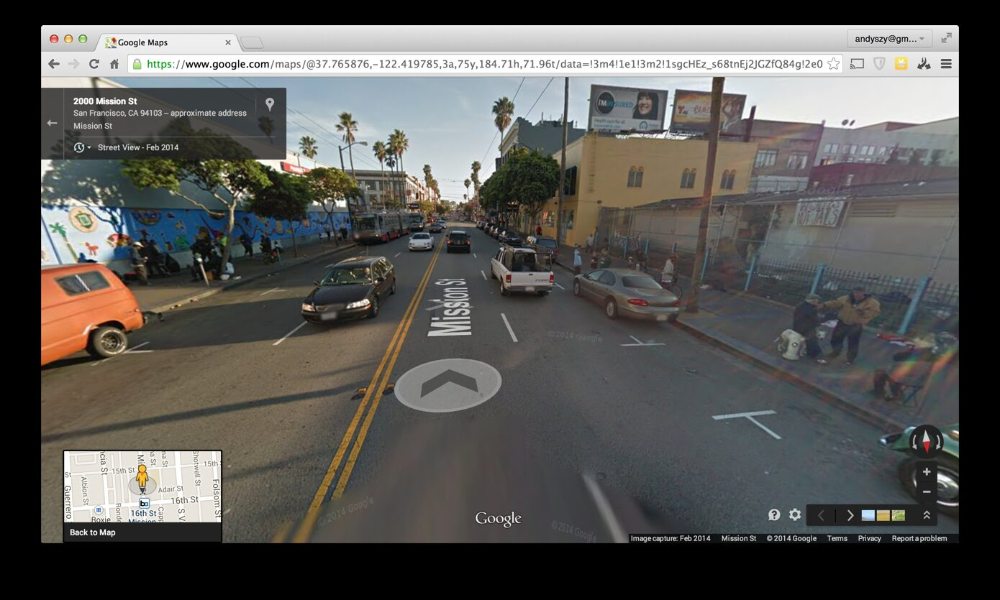
I’m very proud to have given form to the Street View we know and love today—and to have set the template that every competitor would go on to follow.
Want to see more?
If you’d like to hear more about my work or go deeper into any of these projects, get in touch. You can also see some of my extracurricular projects back on my home page.